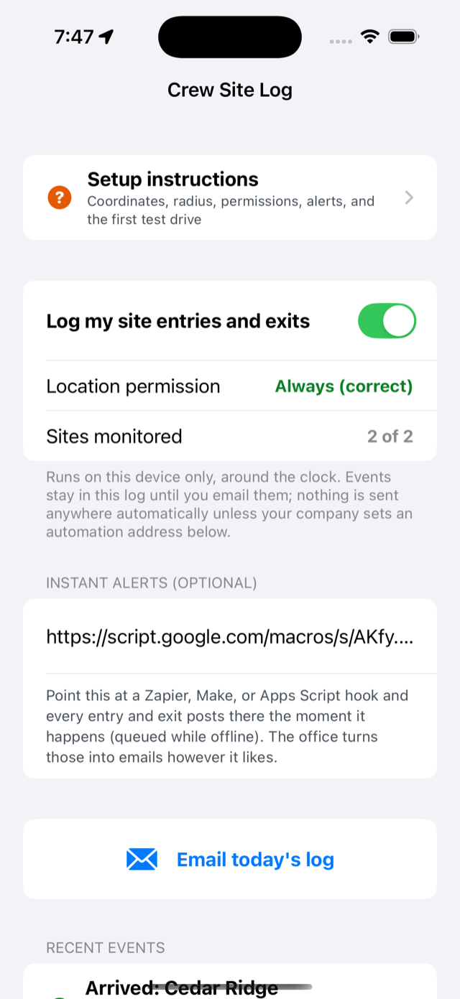
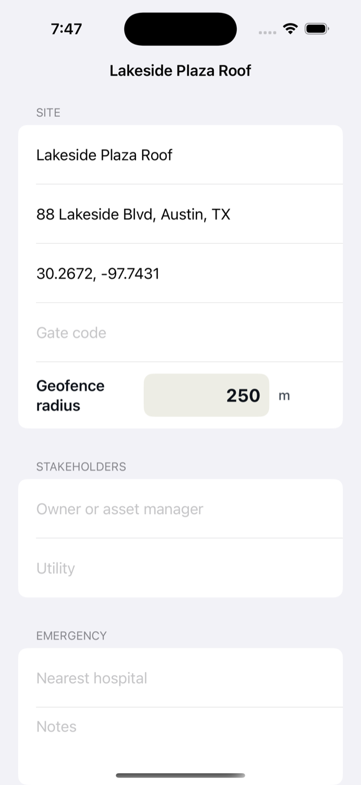
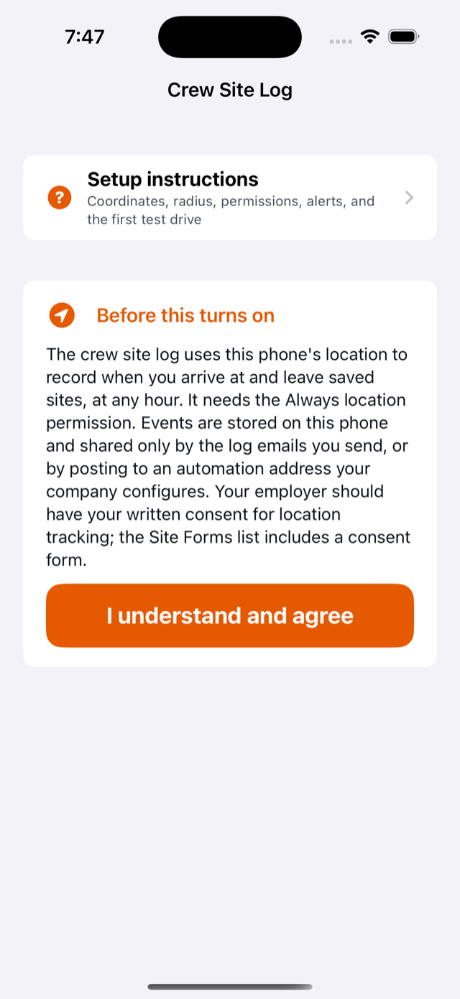
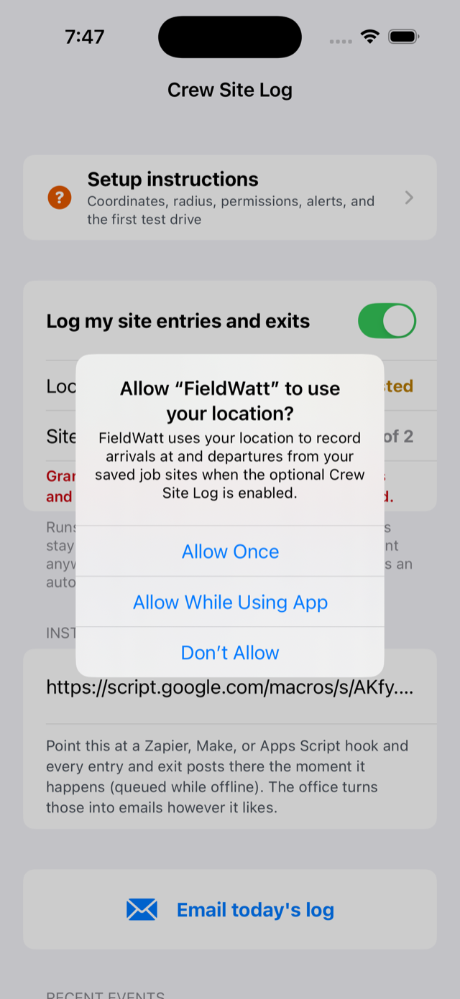
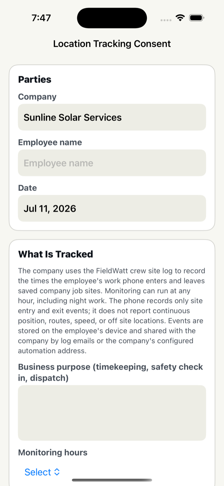

Automatic arrival and departure logging for field crews, explained end to end: what it does, every screen, every option, every way to get the records to the office, and what to do when something looks wrong. Written to be reread; bookmark it on every phone that uses the feature.
Company owner setting this up for a crew? Your chapters are Part 6 (the automated updates: instant emails to your inbox and the self filling Google Sheet timesheet, about ten minutes with a free Google account) and Part 7 (the per phone rollout checklist). Techs mostly need Part 3.
Part 1 What it is and how it works
Every job site you save in FieldWatt can carry GPS coordinates and a radius. Together they define an invisible circle called a geofence. The iPhone itself watches those circles using the same low power system Apple uses for "remind me when I get home": the app does not need to be open, the screen does not need to be on, and the phone can sit in a pocket all shift.
One event crossing in, one crossing out. The route between sites is never seen or stored.

The feature running healthy: green permission, 2 of 2 sites watched, events flowing.
Where it lives: open Settings → Crew Site Log, or Site Forms → Crew → Crew Site Log. Both go to the same screen, shown here.
What gets recorded per event: the site name, the technician name from the phone's profile, arrival or departure, and the time. That is the entire record. There is no map, no route, no live tracking, and nothing at all recorded away from saved sites.
Where records go: they stay on the phone until they leave one of two ways, both under your control:
Daily log email: the tech taps one button and a formatted summary emails to the office and to the tech. Needs nothing to set up.
Instant alerts: each event posts immediately to an automation address your company owns, which turns it into an email, a Google Sheet row, a Slack message, or all three. Ten minutes to set up, covered in Part 6.
Part 2 What it can do for you
Same feature, six different jobs. Pick the ones that match your operation; the setup is identical, only the delivery choice differs.
🕑 Timesheet backup
Arrival and departure stamps for every site visit, kept automatically. Pair with the Google Sheets option in Part 6 and the sheet becomes a running timesheet nobody has to fill in.
📧 Boss knows, instantly
The original request this feature was built for: an email lands the moment a tech enters or leaves a site. Use the instant alerts path with the email script.
🤝 Customer proof of service
A dated, timestamped record that a crew was on site backs up invoices and settles disputes. The daily email creates the paper trail with zero extra work.
🛡️ Night and lone worker awareness
Monitoring runs around the clock, so night service calls log the same as day work. An office that sees an arrival but no departure hours later knows to make a phone call.
🚚 Dispatch reality check
With instant alerts on the whole crew, the office sees who is actually where without radio checks: who reached the site, who left, who never showed.
🧾 Billing by time on site
For work billed by hours on site, the paired arrive and depart stamps for each visit give you defensible durations per site per day.
Part 3 Setup, step by step
1Fill in the company profile
Open Site Forms → Company, crew, sites, recipients. Fill in at minimum:
Your name (technician): stamps every event, so the office knows whose phone logged it.
Company email: where the daily log email goes.
Your email: the tech gets a copy of their own logs.
Each phone has its own profile. On a crew rollout, set the technician name on every phone or all the events say the same person.
2Get coordinates for each site
Each site needs latitude and longitude in decimal form. Anatomy of a valid entry:
If your longitude in the US is not negative, the two numbers are probably swapped.
From Apple Maps on the iPhone:
Search the address or switch to satellite view and find the site.
Touch and hold the exact spot the crew actually works from: the gate, the laydown yard, the parking area. A pin drops.
Swipe the place card up; the coordinates are listed near the bottom. Tap them and they copy.
Paste into a note or text them to whoever is setting up the phones.
From Google Maps (phone or computer):
Press and hold the spot (on a computer, right click it).
The decimal coordinates appear in the pin card or at the top of the menu; tap or click to copy.
The three classic mistakes: pasting the street address instead of numbers; swapping latitude and longitude; and the degrees minutes format (anything with ° or quote marks). All three make the site silently unwatchable, which is why the app counts monitored sites for you (Step 5 checks it).
Big sites: drop the pin where trucks actually enter or park, not the middle of a 400 acre field. The circle is measured from the pin.
3Set each site's radius
The radius is how far the circle reaches from the pin, in meters. Phones locate themselves within roughly 20 to 50 meters in the open, worse in vehicles, metal buildings, and storms; the radius has to absorb that wobble.
Bigger is more reliable, smaller is more precise. Never below 100 m.
Site type
Radius
Why
Residential job
100 to 150 m
Precise enough to separate from neighbors, big enough for GPS wobble
Commercial building
200 to 300 m
Covers the lot and loading areas
Shop or storage yard
150 to 250 m
Catches yard movements without watching the whole street
Utility scale solar site
300 to 500 m
Centered on the gate or laydown; the site itself may be miles wide, the entrance is what matters

The site editor: coordinates pasted as decimals, radius set below.
Enter both in the app: Site Forms → Company, crew, sites, recipients → tap the site (or Add site).
Paste the coordinates into GPS coordinates.
Set Geofence radius in meters, per the table above.
Repeat for every active site, up to 20 per phone (an iOS limit; the app warns past it).
While here, fill the address and gate code too; the emergency info flows into the safety forms.
4Turn it on and grant the permission (each phone)

First open: the consent screen. Nothing runs until it is accepted.
Open Settings → Crew Site Log. The first visit shows the consent screen laying out exactly what will and will not be recorded. Tap I understand and agree, then flip on Log my site entries and exits.
iOS immediately asks about location. This is the make or break moment of the whole setup, so here is precisely what to do.

The iOS dialog. Note it does not offer Always here; that comes in the next step.
iOS grants Always in two stages, and the dialog never offers Always directly:
On the dialog, tap Allow While Using App. (Allow Once and Don't Allow both break the feature.)
Then open iPhone Settings → Apps → FieldWatt → Location and change it to Always. Confirm Precise Location is on.
Back in FieldWatt, the status row must read Always (correct) in green, as in the earlier screenshot. Amber or red text names exactly what is missing.
The two stage Always grant. Days later iOS may pop "keep allowing?": choose Always Allow.
The number one setup failure: stopping at While Using. The feature then only works with the app open on screen, which quietly means it logs nothing all day. If events ever stop appearing, check this first.
5Verify the screen agrees
The Crew Site Log screen self reports. Before calling a phone done, confirm all three:
Location permission: Always (correct) in green.
Sites monitored: N of N, where N matches the sites you gave coordinates. A lower first number means some coordinates did not parse; recheck their format.
No red or amber warning lines. Each warning names its own fix.
6Get the consent form signed

The built in consent form: disclosure, hours, acknowledgments, signatures.
Employee location tracking needs written consent: several states require it outright, and everywhere it turns a surveillance surprise into a documented agreement.
Open Site Forms → Location Tracking Consent.
It spells out what is recorded and what is not, in the same plain terms as this guide.
Set Monitoring hours: pick All hours if your crew works nights, so the paper matches reality.
Employee and company representative sign on the phone; generate the PDF and keep it with HR records.
One per employee, signed before their phone starts logging.
Part 4 Every control on the screen, explained
Top to bottom, matching the numbered list.
Setup instructions: the in app version of this guide, always available offline, with a link back to this page.
Log my site entries and exits: the master switch for this phone. Off means nothing is watched, nothing is logged, period.
Location permission: live status. Green Always (correct) is the only healthy value; anything else names the problem.
Sites monitored: how many saved sites are actually being watched versus how many have usable coordinates. iOS caps watching at 20 per phone.
Instant alerts, automation URL: optional. Paste your company's hook address here (Part 6). Leave empty and nothing is ever sent automatically.
Email today's log: builds the daily summary email for the day so far. Grayed out until at least one event exists today.
Recent events: the log itself, newest first. Green arrows are arrivals, blue arrows departures. A small orange bolt on an event means it has successfully posted to the automation URL; no bolt means it is still queued (it retries on its own).
Part 5 The daily log email
Zero infrastructure, works from day one. During the day the phone quietly collects events:
Four crossings, four stamps. At day's end, one tap emails the lot.
Tapping Email today's log opens a prefilled email to the company email and the technician's email, ready to send:
Subject: Site log: Marcus Reed, Jul 7, 2026
Site log for Marcus Reed
Tuesday, July 7, 2026
7:02 AM Arrived: Lakeside Plaza Roof
11:41 AM Departed: Lakeside Plaza Roof
12:15 PM Arrived: Cedar Ridge Battery Yard
5:28 PM Departed: Cedar Ridge Battery Yard
Logged automatically by FieldWatt on the technician's device.
No signal at quitting time? The log lands in the app's Outbox and sends when coverage returns; nothing is lost.
Change who receives it by editing the company email and your email in the profile. The email is a normal draft, so the tech can also add recipients before sending.
Missed a day? The events stay in the list; the button emails the current day, and older days remain visible in Recent Events for manual reference.
Part 6 Instant alerts: the automation URL, your Google account, and more
Phones cannot silently send email; Apple requires a human tap. So for the boss to get mail the moment a crossing happens, the phone instead posts the event to an automation URL: a web address your company owns that reacts by sending the email (or writing a spreadsheet row, or pinging Slack). FieldWatt has no server of its own and never sees these events; the pipeline is entirely yours.
One URL, any destination you want. Offline events queue on the phone and post when signal returns.
What the phone sends
Each post is a small JSON package. If several events queued up offline, they arrive batched in one post, oldest first:
"enter" is an arrival, "exit" a departure, and the time is universal time (UTC); the recipes below convert it to your local zone.
Set up a company Google account first (recommended)
You can build the automation under any Google account, but a dedicated one is the professional move:
Create a free account like ops.yourcompany@gmail.com. It becomes the owner of the script, the spreadsheet, and the alert history.
It survives personnel changes: the automation is not tied to anyone's personal Gmail.
Its inbox is a permanent archive of every alert, searchable, separate from personal mail.
Gmail filters on it can fan alerts out: forward everything to the boss's real address, only arrivals to dispatch, and so on, without touching the script.
Everything below takes about ten minutes with that account signed in.
Delete the placeholder code and paste the script below. Put the boss's real email in the "to" line (a comma separated list works for several people). Adjust the time zone if you are not Central.
Click Deploy → New deployment, choose type Web app, set Execute as: Me and Who has access: Anyone, then Deploy. Approve the permission prompts (Google shows a warning because it is your own unverified script; choose Advanced, then Go to project).
Copy the Web app URL it produces (it starts with https://script.google.com/macros/).
On each crew phone: Crew Site Log → paste it into Company automation URL.
function doPost(e) {
var data = JSON.parse(e.postData.contents);
var events = data.events || [];
for (var i = 0; i < events.length; i++) {
var ev = events[i];
var verb = ev.event === "enter" ? "arrived at" : "left";
var when = new Date(ev.time).toLocaleString("en-US", { timeZone: "America/Chicago" });
MailApp.sendEmail({
to: "boss@yourcompany.com",
subject: ev.technician + " " + verb + " " + ev.site,
body: ev.technician + " " + verb + " " + ev.site + " at " + when
});
}
return ContentService.createTextOutput("ok");
}
Updating the script later: after editing, use Deploy → Manage deployments → edit (pencil) → New version. Editing without redeploying does nothing, which catches everyone once.
Recipe 2: a Google Sheet timesheet that fills itself in
Same idea, but every event also becomes a spreadsheet row, giving the office a live, sortable, exportable timesheet. This script does both: sheet row always, email too if you keep that section.
In Google Drive (same ops account), create a spreadsheet named Crew Site Log. Put headers in row 1: Date, Time, Technician, Event, Site.
Copy its ID: the long jumble in the sheet's web address between /d/ and /edit.
Create the Apps Script exactly as in Recipe 1, but with this code, pasting your sheet ID in:
var SHEET_ID = "PASTE_YOUR_SHEET_ID_HERE";
var ALERT_EMAIL = "boss@yourcompany.com"; // leave "" for sheet only
var TIME_ZONE = "America/Chicago";
function doPost(e) {
var data = JSON.parse(e.postData.contents);
var events = data.events || [];
var sheet = SpreadsheetApp.openById(SHEET_ID).getSheets()[0];
for (var i = 0; i < events.length; i++) {
var ev = events[i];
var t = new Date(ev.time);
var dateStr = Utilities.formatDate(t, TIME_ZONE, "MM/dd/yyyy");
var timeStr = Utilities.formatDate(t, TIME_ZONE, "h:mm a");
var verb = ev.event === "enter" ? "Arrived" : "Departed";
sheet.appendRow([dateStr, timeStr, ev.technician, verb, ev.site]);
if (ALERT_EMAIL) {
MailApp.sendEmail({
to: ALERT_EMAIL,
subject: ev.technician + " " + verb.toLowerCase() + ": " + ev.site,
body: ev.technician + " " + verb.toLowerCase() + " " + ev.site + " at " + timeStr + " on " + dateStr
});
}
}
return ContentService.createTextOutput("ok");
}
What lands in the sheet, one row per crossing:
Date
Time
Technician
Event
Site
07/07/2026
7:02 AM
Marcus Reed
Arrived
Lakeside Plaza Roof
07/07/2026
11:41 AM
Marcus Reed
Departed
Lakeside Plaza Roof
07/07/2026
12:15 PM
Marcus Reed
Arrived
Cedar Ridge Battery Yard
From there it is ordinary spreadsheet work: filter by technician for payroll, by site for job costing, subtract arrive from depart for hours on site. The whole crew posts to the same URL, so one sheet covers everyone.
Recipe 3: Zapier (no code, point and click)
In Zapier, create a Zap with trigger Webhooks by Zapier → Catch Hook. Copy the hook URL into a crew phone's automation field.
Create one test event: with the phone's log enabled, drive (or move the pin of a test site onto yourself, save, and step out and back). Zapier's test panel will show the caught event.
Remember the payload wraps a list: your fields appear as events 1 event, events 1 site, events 1 technician, events 1 time.
Add an action: Email by Zapier (or Gmail, Slack, SMS by Zapier, Google Sheets; anything in their catalog). Map the fields into the subject and body. Turn the Zap on.
Zapier's free plan runs about 100 tasks a month, and every event is a task: a five person crew hitting two sites a day burns roughly 400 a month. Fine for a trial; for production either pay for Zapier or use the Apps Script recipes, which are free without limits that matter here. Make.com works identically via its Webhooks module with a friendlier free tier (about 1000 operations).
Security notes for the automation URL
The URL must start with https; the app refuses anything else.
Treat the URL like a key. Anyone who has it could post fake events to your pipeline. Share it only with the crew phones.
If it leaks, redeploy the Apps Script (or regenerate the Zapier hook) to get a fresh URL, and paste the new one into the phones.
The bolt icon on each event in the app confirms delivery. Events without a bolt retry automatically whenever a new event fires or the app launches.
Part 7 Rolling it out to a whole crew
Phones log independently; the technician name on each event tells everyone apart.
Per phone checklist (about five minutes each once you have the coordinates and the URL):
FieldWatt installed, Pro active.
Profile: technician name and the two emails set. The name is what distinguishes this phone's events.
Sites entered with coordinates and radius. Sites do not sync between phones (FieldWatt has no server, by design), so enter them on each phone; texting the crew a list of coordinate pairs makes this a two minute paste job. Setting up all phones at the office before handout is easiest.
Consent form signed and filed.
Crew Site Log: consent accepted, toggle on, permission Always (correct), sites monitored all green.
Automation URL pasted (if using instant alerts).
Walk out test if time allows: see Part 8.
Part 8 Day to day use and the first test
The first test, done right
Pick one configured site you can drive to. Confirm the screen shows it monitored.
Start from at least a half mile away. Starting inside the circle logs nothing; iOS only fires on crossings, so no arrival will fire until you leave and come back.
Drive in, park a few minutes, drive out.
Expected timing: the arrival notification usually lands within moments of crossing, sometimes two or three minutes; iOS trades a little speed for battery. The departure intentionally fires a bit past the circle's edge so parking near the boundary does not flap.
Check: the event list shows the pair; the notification appeared; if the automation URL is set, the bolt icon shows on both events and the email or sheet row arrived.
What a normal day looks like
The tech does nothing. Arrivals and departures log themselves and each fires a small notification on the tech's own phone, so the logging is never secret from the person being logged.
End of day, one tap on Email today's log if you use the daily email. With instant alerts, even that is optional.
The office watches the inbox or the sheet fill in.
Housekeeping
Finished jobs: clear the coordinates from a site (or delete the site) and it stops being watched, freeing one of the 20 slots.
Record retention: the phone keeps the most recent 2000 events (a working year or more for most techs). If the records matter, get them off the phone regularly via the daily email or the sheet; the phone is a logger, not an archive.
Reset to defaults (in Settings) erases the event log along with everything else in the app. Export first.
New phone: settings do not transfer. Run the per phone checklist again.
Part 9 Troubleshooting
Symptom
Fix, in order of likelihood
No events, ever
1. Permission row must say Always (correct); the usual culprit is While Using. iPhone Settings → Apps → FieldWatt → Location → Always, Precise on. 2. The toggle must be on and consent accepted. 3. Sites monitored must count the site: if not, its coordinates did not parse (decimals, comma, latitude first). 4. You must cross the boundary; starting inside fires nothing until you leave and return.
Events arrive minutes late
Two or three minutes is normal iOS behavior, worse in Low Power Mode and in areas with no cell towers (pure GPS is slower to notice). Delivery timing of the automation email adds whatever your hook takes, usually seconds.
Arrive and depart repeating during one visit
The radius is too small for the local GPS quality, or the tech parks exactly on the boundary. Double the radius. Metal buildings and canyons degrade GPS; err bigger.
Wrong site on events
Two circles overlap. Shrink radii or move pins until they clear each other.
Automation emails not arriving
1. Bolt icons on events? If no bolt, the post has not gone through: URL wrong, not https, or no signal yet (it retries alone). 2. Bolts present but no email: the problem is on the Google or Zapier side. Check the Apps Script executions page (script.google.com → your project → Executions) or the Zap history for errors, and the spam folder. 3. Edited the Apps Script recently? You must redeploy a New version; edits without redeploy do nothing.
Worked for days, then stopped
iOS periodically asks "keep allowing FieldWatt to use your location?" and someone tapped the wrong answer. Recheck the permission. Also confirm the tech did not flip the toggle off; the office noticing silence is the check on that.
Sites monitored: 0
The screen's warning line says why: permission missing, toggle off, or no site has valid coordinates.
More than 20 active sites
iOS watches at most 20 per phone; FieldWatt takes the first 20 with coordinates and warns about the rest. Clear coordinates from inactive jobs.
Battery complaints
Geofencing itself costs a few percent a day. If a phone drains fast, something else is the cause; check iPhone Settings → Battery for the real consumer.
Part 10 FAQ
Can the boss see where a tech is right now? No. There is no live map and no route history anywhere in the system. The only data that exists is the timestamped crossing events of saved site circles.
Does it track after hours? Monitoring runs around the clock (night work was the requirement this was built for), but it still only ever records crossings of saved job sites. Stops at home, stores, anywhere else: invisible, by design. If a tech's home is inside a site circle, fix the radius.
Can an employee turn it off? Yes, always: the in app toggle or revoking location permission. Apple guarantees that and no app can prevent it. The signed consent form is what makes quietly disabling it an HR conversation instead of a mystery.
Phone dead or off? Nothing logs. Airplane mode: crossings usually still log (GPS works offline) and queued posts deliver when signal returns.
Does it drain the battery? A few percent a day. It is the same mechanism as Apple's own location reminders, not navigation grade GPS.
Do sites sync between crew phones? No. FieldWatt keeps all data on device with no server, which is why nobody can breach a FieldWatt cloud: there is none. Enter sites per phone; a texted list of coordinates makes it quick.
Android? No. FieldWatt is iPhone only.
Multiple companies or crews on one automation? Works fine: everyone posts to the same URL and the technician field tells rows apart. If you want separate pipelines per crew, deploy the script twice and give each crew its own URL.
What does FieldWatt's developer see? Nothing. No analytics, no server, no account. Location events exist only on the phone and in whatever pipeline your company points them at.
Is this legal? Employer location tracking of employees on work time with written consent is broadly lawful in the US, but rules vary by state (some require specific notice) and this page is not legal advice. The consent form covers the fundamentals; run it past your counsel or HR provider if in doubt.
Can I use it just for myself? Absolutely. A solo operator gets a personal automatic timesheet: enable it on your own phone, use the sheet recipe, and your billing records write themselves.
Keep handy Quick reference card
Thing
Value
Coordinate format
Decimals, latitude first, comma between: 30.2672, −97.7431
Radius default / floor
200 m / never under 100 m
Permission required
Always, with Precise Location on: set in iPhone Settings → Apps → FieldWatt → Location
Site limit per phone
20 (iOS limit); free slots by clearing coordinates from done jobs
Event timing
Moments to about 3 minutes after crossing; departure fires past the edge on purpose
Daily email
Crew Site Log → Email today's log; queues in Outbox when offline
Instant alerts
Paste one https automation URL per phone; bolt icon = delivered
Event retention on phone
Most recent 2000 events
Consent form
Site Forms → Location Tracking Consent, one per employee, before logging starts
Questions this page does not answer? Reach us through the FieldWatt support page: include what the permission row and Sites monitored show, and what the event list looked like after a test drive, and you will get a fast answer.